|
Selectie niet compleet bij eerste training
|
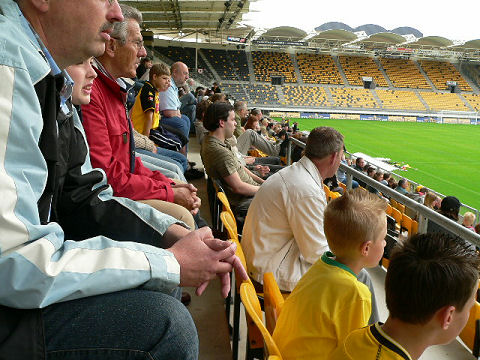
De belangstelling voor de eerste training was behoorlijk groot. Honderden mensen
zaten op de hooftribune.
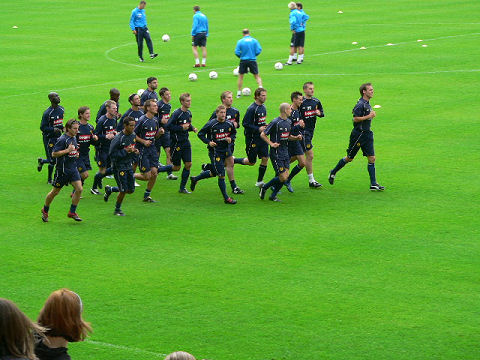
Achttien spelers draven rondjes.
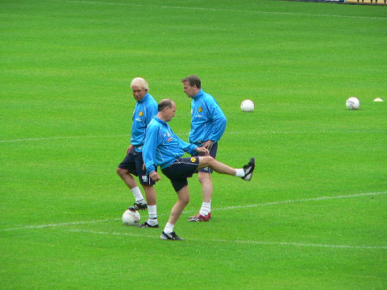
V.l.n.r. Martin Koopman, Jan Lauers en Anton Scheutjens.
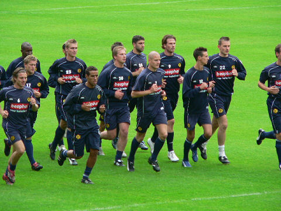
In het midden de via diverse omzwervingen teruggekeerde Fatih Sonkaya.
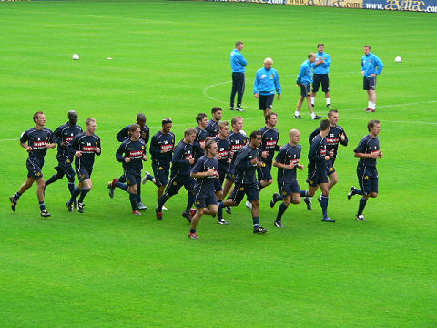
Afwezigen: Lachambre, Oper, Senden, Bodor.
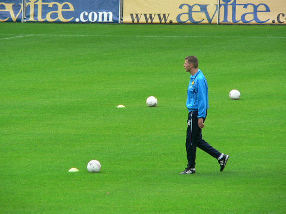
Marc Luijpers, kracht- en hersteltrainer.
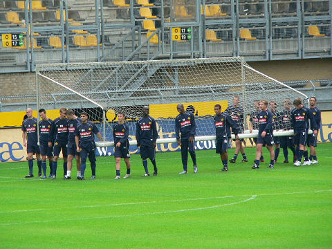
De fans op de tribune begroetten zes nieuwe gezichten...
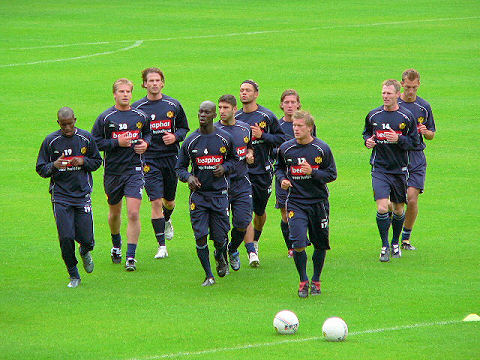
... Willem Jansen, Frank van Kouwen, Fatih Sonkaya, Adnan Serecovic, Cliff
Mardulier en Charlie van den Ouweland.
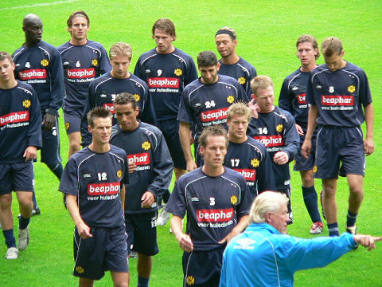
Martin Koopman geeft aanwijzingen.
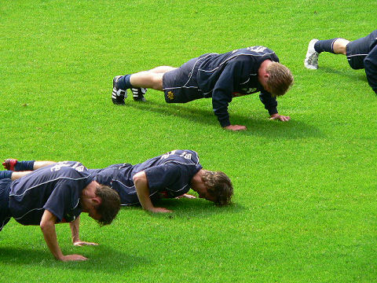
Er volgen diverse pittige oefeningen.
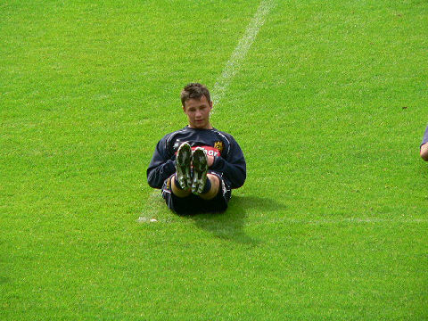
De 15-jarige Adnan Serecovic, bedoeld voor de toekomst.
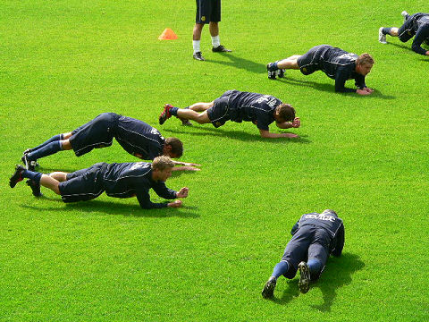
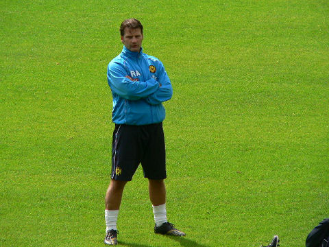
De nieuwe uitshirts worden donkerblauw met een beetje geel erin. Op zowel voor-
als achterzijde komt Aevitae te staan.
©
Koempels Pleasure Dome
|